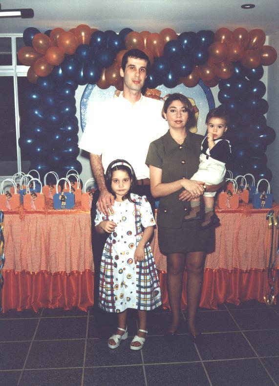

A preserved copy of the personal homepage my father kept at UFPE's Centro de Informática while he was a professor at CEFET Paraíba and a PhD student in Recife. Last updated in March 2002 and still “eternally under construction”. Yes, the baby is me.
